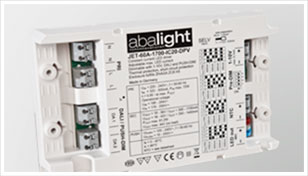

LED-Treiber
Zur light+building 2012 stellt abalight einen innovativen und universellen, DALI-fähigen, LED Treiber vor. Der Treiber hat einen Standby-Verbrauch von unter 0,4 Watt und ist im Rahmen der Anbindung an zentrale Batterieanlagen nicht stromfähig.

abalight hat bei der Entwicklung besonderen Wert auf Flicker Free Lighting (FFL) gelegt, um den üblichen 100Hz Flicker und Flicker durch PWM-Dimmung zu vermeiden.
Für temperaturkritische Anwendungen wir z.B. Downlights verfügt der Treiber einen Modus, bei dem ein NTC die Temperatur des LED Moduls überwacht und den Ausgangsstrom ggf. nach Unten korrigiert.